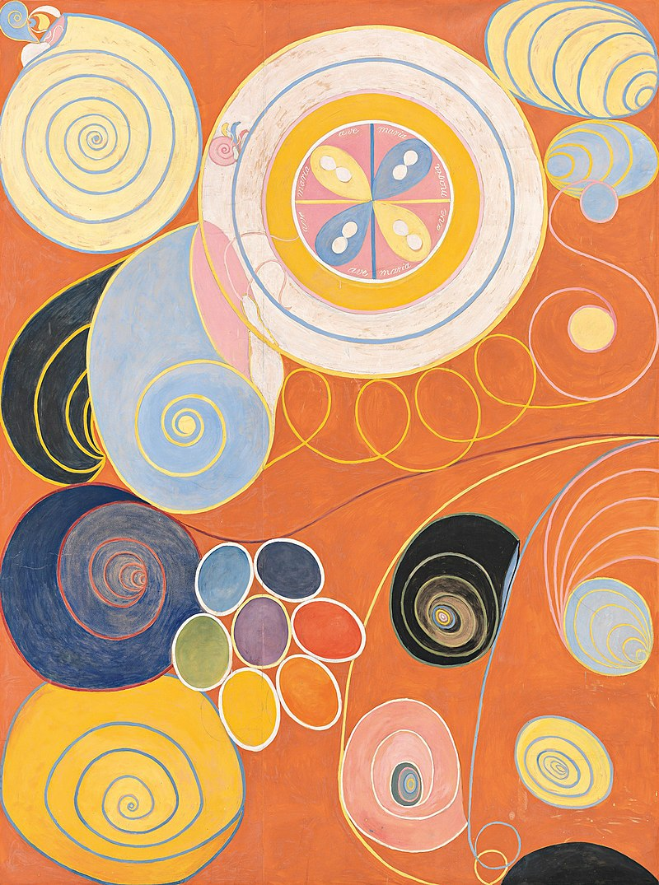

Творби

1.

2.
3.
4.
Хилма Аф Клинт
1862-1944г
Хилма аф Клинт е шведска художничка, спиритистка, теософ и антропософ, една от първите представители на абстракционизма.Тя е четвъртото от петте деца на флотския офицер Виктор аф Клинт и Матилда Зонтаг. През 1872 година семейството се премества в Стокхолм. След като получава средно образование, Хилма учи в Техническото училище, взема уроци по портретна живопис и в продължение на 5 години, до 1887, продължава обучението си в шведската Кралска академия на изкуствата. От края на 1880-те години до 1908 тя работи в собствено ателие в Стокхолм, на улица Хамнгатан 5. През този период нейното творчество е силно повлияно от експресионизма на Едвард Мунк. Художничката рисува пейзажи, портрети и сюжетни картини, провежда първите си изложби.